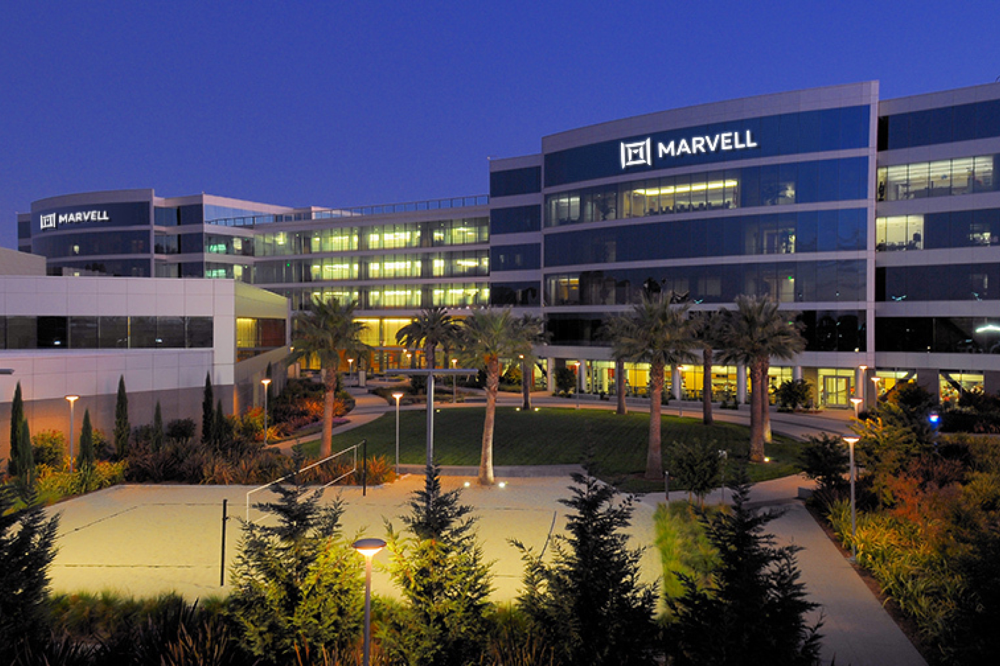

Overview
Growing up in the Bay Area, I was surrounded by people who were passionate about computer science
and the possibilities of technology. Both of my parents work with code, and seeing their contributions
to the industry helped me recognize software as a way to turn ideas into something useful.
Their example inspired me to pursue computer science and build a career creating tools that help
people solve meaningful problems.
At the University of Southern California, I built a foundation in algorithms, operating systems,
computer networks, and artificial intelligence. Projects ranging from a concurrent stock-trading
application to a C++ limit-order-book engine have given me opportunities to explore how software
behaves under real constraints: coordinating concurrent requests, maintaining correctness, and
measuring performance. My work at Marvell and Alation has extended that perspective to AI systems,
where usefulness also depends on evaluation, context management, and understanding the needs of
the people using the product.
I believe technology can improve lives through applications in healthcare, climate solutions,
and the tools people rely on every day. I am especially interested in adapting AI to specific
domains, where a strong understanding of the problem can make a system more useful and reliable.
As I continue my career, I want to combine my interests in AI, systems programming, and full-stack
development to build practical products, learn from engineers with different perspectives,
and take ownership of problems from the first design decision through deployment and improvement.
Work Experience
Alation
My interests span end-to-end AI systems, high-performance C++ software, and full-stack applications.
I am currently an AI/ML Software Engineer at Alation Intelligence Operating Systems, where I develop
evaluation pipelines for AI accuracy, latency, stability, and agent behavior. My context-management
improvements have reduced token consumption by 11% while preserving model accuracy and latency.

Marvell Technology
Previously, as a Machine Learning Engineer Intern at
Marvell Technology, I built and deployed
an LLM agent using Amazon Bedrock and Claude Sonnet 3.7 to support over 100 chip-design engineers.
I also developed parallelized C++ components and a web interface for AI chat and MongoDB data visualization
to help design verification engineers monitor project progress.
In addition to my work at Marvell, I have also interned at a startup company Job Pulse. As a full stack Engineer,
I worked
with the US Department of Defense
to develop an application that can be used for its labor statistics, trends, and analysis for the
technology job market.